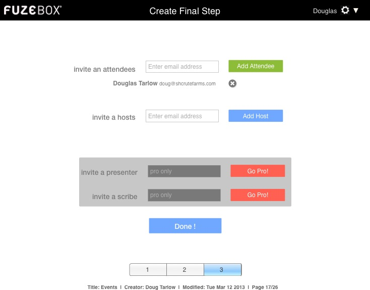

<map name="GraffleExport">
	<area shape=poly coords="462,165,465,162,463,161,461,163,458,161,457,162,459,165,457,167,458,169,461,166,463,169,465,167,462,165" href="create5.html">
	<area shape=poly coords="466,159,466,170,455,170,455,159,466,159" href="create5.html">
	<area shape=rect coords="453,217,561,241" href="create5.html">
	<area shape=rect coords="295,431,439,461" href="create5.html">
</map>

